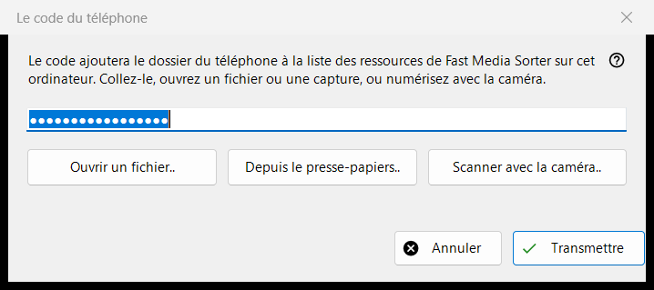
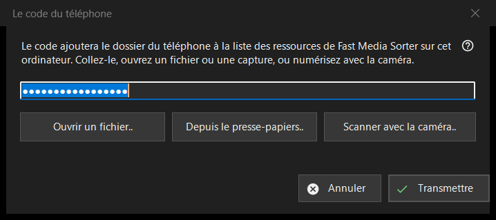

Le code du téléphone
Objectif
Reçoit un code de connexion généré par l'application du téléphone et le transmet à Fast Media Sorter, qui ajoute le dossier du téléphone à sa liste de ressources sur cet ordinateur. Elle s'ouvre depuis le bouton «Code de téléphone..» de la fenêtre principale de Share Manager.


Dans cet ordre
- Amenez le code dans la fenêtre de l'une des quatre façons : saisissez-le ou collez-le dans la zone, cliquez sur «Ouvrir un fichier..», cliquez sur «Depuis le presse-papiers..» ou cliquez sur «Scanner avec la caméra..».
- Cliquez sur «Transmettre».
- Confirmez l'ajout du dossier dans la fenêtre de Fast Media Sorter qui apparaît.
Les éléments
Code de connexion
Une zone d'une seule ligne qui affiche des points à la place des caractères, car le code est un secret ; il n'est jamais écrit dans un journal. Si vous cliquez sur «Transmettre» avec la zone vide, on vous demande de saisir le code, de le coller ou d'ouvrir un fichier ou une capture d'écran.
Fichier, presse-papiers et caméra
«Ouvrir un fichier..» lit les fichiers .fmscfg, .json et .txt ainsi que les images QR (.png, .jpg, .jpeg, .bmp, .webp) ; un fichier peut aussi être glissé sur la fenêtre. «Depuis le presse-papiers..» lit le code dans le presse-papiers. «Scanner avec la caméra..» ouvre la fenêtre de la caméra, et le texte scanné est traité comme s'il avait été collé.
Transmettre
Le code est vérifié, puis envoyé au Fast Media Sorter en cours d'exécution, dont la propre boîte d'importation pose toujours ses questions habituelles. En cas de succès, l'état indique «Le code a été transmis : confirmez l'ajout dans la fenêtre de Fast Media Sorter.» et cette fenêtre se ferme. Si Fast Media Sorter est introuvable, s'il s'agit d'une version plus ancienne ou s'il ne répond pas, le code est placé dans le presse-papiers avec des marqueurs de confidentialité, et la ligne d'état indique de le coller avec «Importer du presse-papiers» dans le panneau des ressources.
Messages de la ligne d'état
Un document qui n'est ni un code de connexion ni un fichier de réglages de ressources est signalé comme illisible. Un fichier créé par une version plus récente demande de mettre à jour Fast Media Sorter. Si un autre programme occupe le presse-papiers, l'état l'indique.
Paramètres du gestionnaire · Paramètres de partage SFTP · Paramètres du serveur d’échange